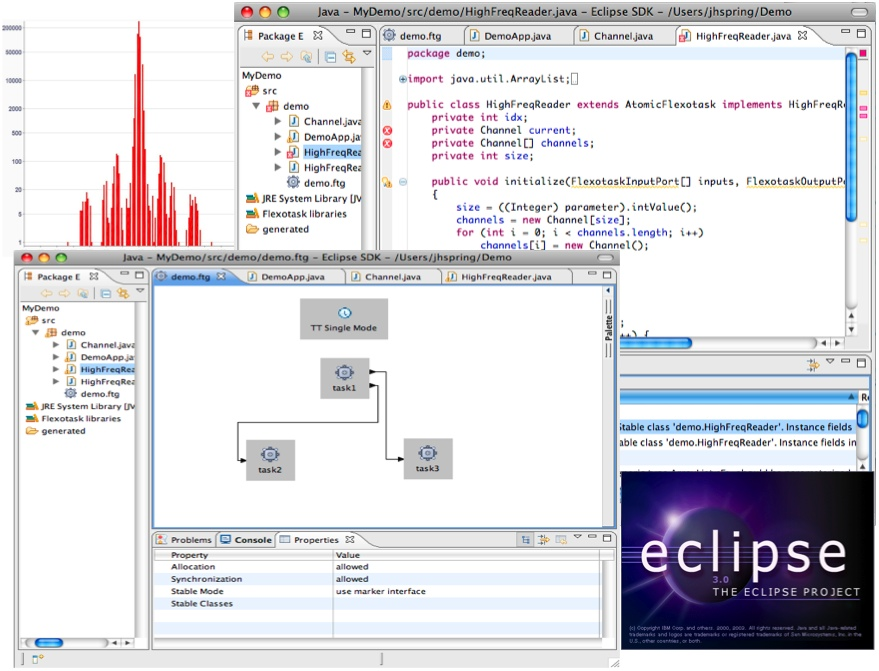

Josh Auerbach, David Bacon, Jesper Honig Spring, and Jan Vitek
Real-time programming is an emerging area of importance, but real-time systems are growing more complex, making Java™ an attractive platform for building large mixed-mode real-time systems. Mixed-mode real-time systems are application where some components must react in a timely manner while other have no constraints on their execution time, examples of such applications can be found in domains ranging from market data systems on Wall Street to scientific codes on satellites. The challenge is how to integrate real-time tasks which require sub-millisecond response times with components that have not been written to abide with any real-time constraints. While commercial products such as IBM's WebSphere Real-Time solves some of the integration problems with the help of novel Real-time Garbage Collection techniques, there is still a class of highly demanding tasks that needs better response times.
The Flexible Task Graph, or FlexoTask, programming model provides a single programming model for very low latencies real-time programming. This model uses static analysis to enforce restrictions, so that programs are guaranteed to meet the restrictions. This contrasts with the Real-Time Specification for Java, whose NoHeapRealtimeThread relies on dynamic checking, meaning that extensive testing is required in order to be relatively assured that a program will always meet the restrictions.

Fig. 1 The Flexible Task Graph Development environment running under Eclipse.
How does it work?
During development, the Eclipse-based editor and builder monitors the Java
language restrictions to ensure that they are being adhered to. The main restrictions
concern the use of static storage, although, for performance-critical applications,
there are optional restrictions on allocating objects and synchronization.
Upon compilation, the Eclipse-based builder rewrites some Java bytecodes to
support some Flexible Task Graph features. When the program is executed, the
Java VM (virtual machine) checks all the bytecodes for safe enforcement of
all of the restrictions. Thereafter, a Flexible Task Graph runs in a privileged,
high-priority thread that is exempt from being paused by system activities
such as garbage collection and JIT (just-in-time) compilation. The programming
model gives each task in the Flexible Task Graph a private memory area that
is optionally divided into a heap and a transient area. Communication between
tasks can be by deep copy
or by reference.
Communication between the task graph and the rest of the Java application
can be through a restricted form of object sharing or
by using transactional methods. The model supports the addition of pluggable
schedulers, pluggable "distributors" (for
crossing machine boundaries), and pluggable instrumentation. Through the use
of an open-source toolkit released
on sourceforge.net along with an alphaWorks®
release, any developer can build these pluggable components, which extend
the Flexible Task Graphs system with new capabilities.
The Flexible Task Graphs open source codebase was developed at IBM and under research agreements with IBM by Purdue and EPFL. It is being made available under the Eclipse Public License. Flexible Task Graphs are a unification of four previous programming models which have been described in the following papers:
Flexible task graphs: a unified restricted
thread programming model for Java by Joshua Auerbach, David F. Bacon,
Rachid Guerraoui, Jesper Honig Spring, and Jan Vitek, published in LCTES
2008.
Java Takes Flight: Time-portable Real-time Programming
with Exotasks by J.Auerbach,
D. F. Bacon, D. T. Iercan, C. M. Kirsch, V. T. Rajan, H. R. Roeck, and R. Trummer,
published in LCTES 2007.
Reflexes: abstractions for highly responsive systems by J. Spring,
F. Pizlo, R. Guerraoui, and J. Vitek, published in VEE 2007.
Streamflex: high-throughput stream programming in Java by J. Spring,
J. Privat, R. Guerraoui, J. Vitek, published in OOPSLA 2007.
Eventrons:
a Safe Programming Construct for High-frequency Hard Real-time Applications by
D. Spoonhower, J. Auerbach, D. F. Bacon, P. Cheng, and D. Grove, published
in PLDI 2006.